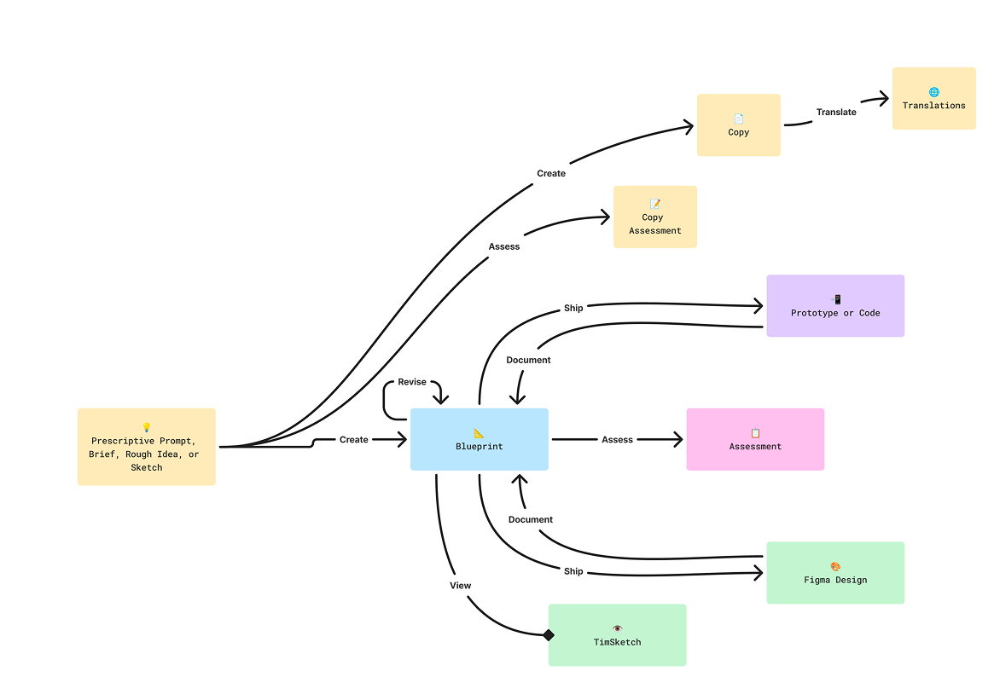
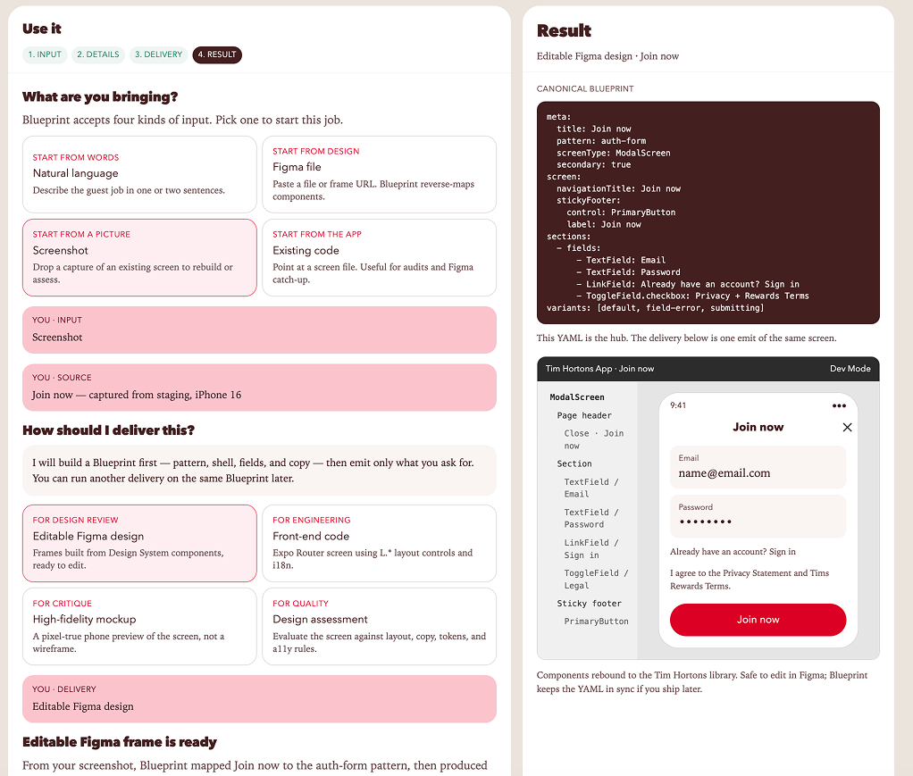
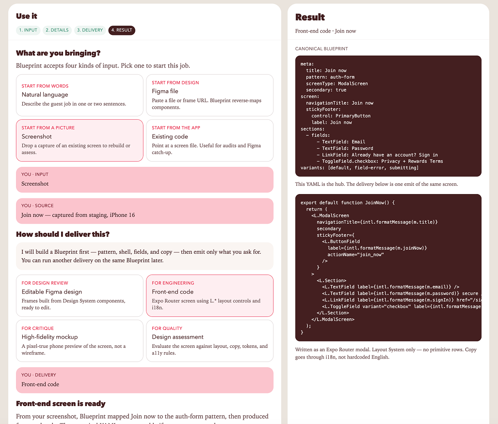
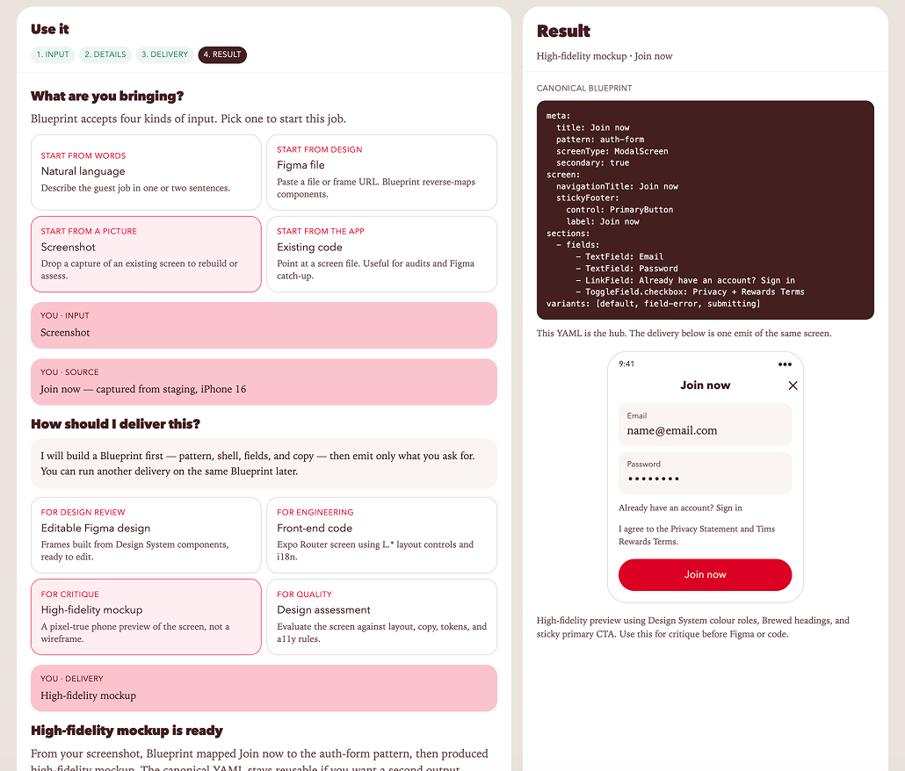
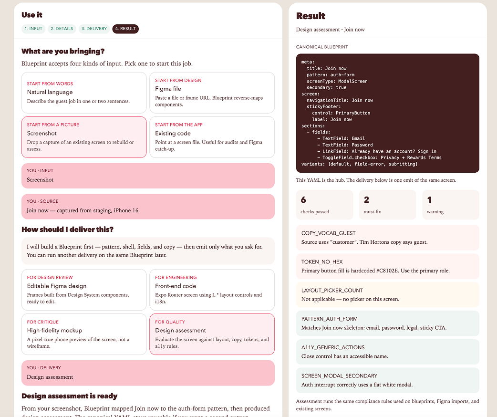

The Challenge
As AI design tools became more capable, our team found that generating UI wasn't the hard part — generating accurate, production-ready UI that followed the Tims Design System was.
Outputs often ignored spacing rules, component patterns, accessibility requirements, copy guidelines, or brand standards. Designers were spending as much time correcting AI-generated work as they would designing it themselves.
We needed a way to transform our Design System from documentation into something AI could understand, reason with, and build from.
Problem Statement
Research & Methodology
We started by auditing where AI was going wrong. Working with 2 designers and a copywriter, I collected a sample of AI-generated screens and flows and compared each one against the Tims Design System — our documentation, Figma component libraries, design tokens, and shipped product screens — logging every deviation.
The failing outputs spanned every format the team generated: screens, flows, and components. The most common failures were spacing that ignored our layout rules, the wrong component or variant for the context, missed accessibility requirements, and copy that broke brand voice.
To determine what knowledge the AI actually needed, I traced each recurring failure back to the implicit rule a designer would have applied — the reasoning we carried in our heads but had never written down — and converted it into an explicit, structured rule the agent could follow.
We validated the system by generating real product experiences and scoring them against the source design system, with the design team reviewing outputs each iteration until results were consistently production-ready.

My role went well beyond documenting rules and patterns. I took on the responsibility to complete:
- Defined the knowledge architecture
- Audited existing design-system rules
- Converted implicit designer knowledge into explicit rules
- Defined component usage logic
- Established AI output requirements
- Created evaluation criteria
- Tested and iterated outputs
- Collaborated with designers and developers
- Built and prototyped the workflow
Solution Approach
I partnered with the design team to create The Tims Blueprint — a structured knowledge base that translates our Design System into rules an AI agent can consistently apply.
Rather than relying on static documentation, we broke the system into reusable knowledge that included:
- Design patterns and interaction rules
- Component behaviours
- Typography, spacing, colour, and design tokens
- Light and Dark mode specifications
- Brand voice and copywriting guidelines
- Real product examples for the AI to reference
The Process
01 — Audit
Identify where AI-generated interfaces deviated from the existing system — cataloguing every spacing, component, accessibility, and copy failure against the source of truth.
02 — Structure
Break the design system into tokens, components, behaviours, patterns, accessibility rules and brand principles — discrete, reusable units of knowledge rather than one monolithic document.
03 — Encode
Translate those rules into knowledge the agent could reason over — pairing each rule with the context for when and why it applies, so the Blueprint could accept prompts, Figma files, screenshots, or existing code as input.
04 — Test
Generate real product experiences and compare them against the source system — producing editable Figma designs, front-end code, high-fidelity mockups, and design assessments.
05 — Iterate
Document edge cases and reasoning that weren't captured by the initial rules, expanding the Blueprint each round so the agent understood not just what components existed, but when and why to use them.
06 — Deploy
Use the Blueprint as the foundation for the team's AI design workflow — the system that now powers day-to-day interface generation.
Results
With the majority of standard interface work generated through the Blueprint, designers are free to focus on complex product problems and custom experiences.




Reflection
The biggest lesson wasn't teaching AI how to draw interfaces — it was teaching it how designers think.
By documenting the reasoning behind our patterns instead of simply listing components, we created a system capable of producing work that is significantly more consistent, scalable, and production-ready.
While complex interactions and custom components still benefit from human design expertise, the Blueprint has fundamentally changed how our team approaches repetitive interface work, allowing designers to spend more time solving customer problems and less time rebuilding common screens.